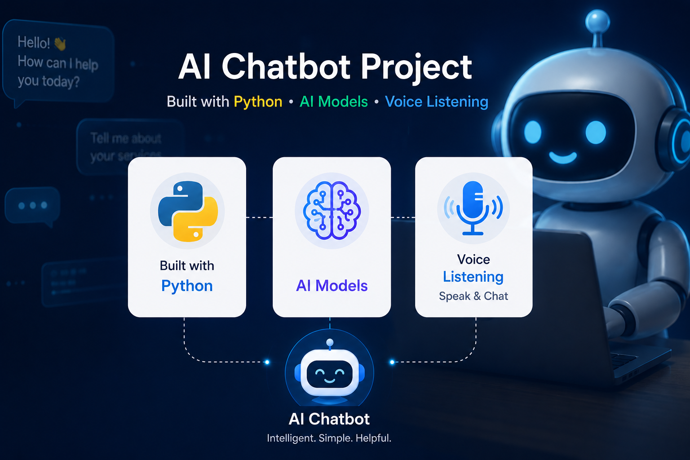

Creating a AI Chatbot Flask API using Python, Flask, NLP, FAISS & Voice
In this blog, we'll guide you step by step on how to create a – AI chatbot including dynamic learning, voice chat, history storage, suggestions, semantic search, and REST APIs.
Chatbot Features
- Dynamic Tokenizer — Stores new questions in tokenizer.json.
- Automatic Word Variation Generator using base_words.txt.
- Semantic Search using Sentence Transformers and FAISS.
- Exact Match, Substring Match, and Order-Insensitive Search.
- Voice Chat using SpeechRecognition.
- Chat History Storage in JSON files.
- Autocomplete and Next Word Suggestions.
- Redis Caching for high performance.
- REST APIs using Flask.
- Dynamic Learning from unknown user inputs.
- Contraction Expansion and Text Preprocessing.
- Scalable architecture for web integration.
Chapter 1 - Project Overview
In this Blog we will build an advanced chatbot application from scratch. By the end of this guide you will have a fully working chatbot with semantic search, voice chat, history management, and dynamic learning capabilities.
Developer Note: Follow the steps in this chapter sequentially before moving to the next chapter. Each module depends on the previous and configuration.
Chapter 2 - Software Installation
Step 1: Install Python 3.8+
- Download Python from python.org - You can download it from https://www.python.org/downloads/
- Check 'Add Python to PATH'.
- Verify:
python --version
pip --version
Step 2: Install Visual Studio Code
- Download VS Code - Install this extension from the VS Code Marketplace.
- Install extensions: Python, Pylance, JSON, Thunder Client
Chapter 3 - Create Project Folder
Create:
D:\Python_Workspace\ChatBotAPI
Open the folder in VS Code and create the following structure:
ChatBotAPI
├── chat.py
├── tokenizer.py
├── generate_variations.py
├── generate_embeddings.py
├── data.json
├── tokenizer.json
├── my_word_model.json
├── base_words.txt
├── contractions.json
├── requirements.txt
├── nltk_data
├── ChatHistory
├── static
└── templates
Chapter 4 - Create Virtual Environment
python -m venv venv
Windows:
venv\Scripts\activate
Linux:
source venv/bin/activate
Chapter 5 - Install All Required Libraries
pip install flask
pip install flask-cors
pip install flask-caching
pip install redis
pip install nltk
pip install numpy
pip install faiss-cpu
pip install sentence-transformers
pip install speechrecognition
pip install prompt-toolkit
pip install torch
pip install transformers
Create requirements.txt:
pip freeze > requirements.txt
Chapter 6 - Install Redis Server
Install Redis and start the server.
redis-server
redis-cli ping
Output:
PONG
Chapter 7 - Download NLTK Models
Create download_nltk.py:
import nltk
nltk.download('punkt')
nltk.download('wordnet')
nltk.download('words')
Run:
python download_nltk.py
The models will be stored inside nltk_data folder.
Chapter 8 - Create Dataset
Create data.json and add prompt-response pairs.
{
"prompt":"hello",
"response":"Hello, how can I help you?"
}
Continue adding all chatbot questions and responses.
Chapter 9 - Create contractions.json
Store short forms and expanded forms.
{
"can't":"cannot",
"i'm":"i am",
"don't":"do not"
}
Chapter 10 - Create base_words.txt
Add base words that will generate variations.
hello
python
flask
database
java
Chapter 11 - Build generate_variations.py
- Read base_words.txt.
- Generate related words and synonyms.
- Store them inside my_word_model.json.
Flow:
base_words.txt → generate_variations.py → my_word_model.json
Code:
# generate_variations.py
import json
import nltk
from nltk.corpus import wordnet
nltk.download('wordnet')
word_model = {}
with open("base_words.txt", "r", encoding="utf-8") as file:
words = [word.strip().lower() for word in file.readlines()]
for word in words:
variations = set()
variations.add(word)
for syn in wordnet.synsets(word):
for lemma in syn.lemmas():
variations.add(lemma.name().replace("_", " ").lower())
word_model[word] = list(variations)
with open("my_word_model.json", "w", encoding="utf-8") as file:
json.dump(word_model, file, indent=4)
print("Word variations generated successfully.")
Chapter 12 - Build tokenizer.py
Purpose: Store unmatched user questions.
Flow:
Unknown Input → tokenizer.json → Administrator Reviews → Dataset Update
tokenizer.py
# tokenizer.py
import json
import os
TOKENIZER_FILE = "tokenizer.json"
def save_unknown_question(question):
if os.path.exists(TOKENIZER_FILE):
with open(TOKENIZER_FILE, "r", encoding="utf-8") as file:
data = json.load(file)
else:
data = []
if question not in data:
data.append(question)
with open(TOKENIZER_FILE, "w", encoding="utf-8") as file:
json.dump(data, file, indent=4)
print("Unknown question stored.")
Chapter 13 - Generate Embeddings
Create generate_embeddings.py.
- Load data.json.
- Generate embeddings using all-MiniLM-L6-v2.
- Store: precomputed_embeddings.npy, prompts_order.npy
generate_embeddings.py
# generate_embeddings.py
import json
import numpy as np
from sentence_transformers import SentenceTransformer
model = SentenceTransformer('all-MiniLM-L6-v2')
with open('data.json', 'r', encoding='utf-8') as file:
data = json.load(file)
prompts = [item["prompt"] for item in data]
embeddings = model.encode(prompts)
np.save("precomputed_embeddings.npy", embeddings)
np.save("prompts_order.npy", np.array(prompts))
print("Embeddings generated successfully.")
Chapter 14 - Build chat.py
This is the main application. Implement:
- Flask configuration.
- Redis cache.
- Dataset loading.
- Text preprocessing.
- Exact matching.
- Substring matching.
- Order-insensitive matching.
- Semantic search with FAISS.
- Voice APIs.
- Suggestions APIs.
- Chat history storage.
- New chat functionality.
chat.py
from flask import Flask, request, jsonify
from flask_cors import CORS
from flask_caching import Cache
import json
import numpy as np
import faiss
from sentence_transformers import SentenceTransformer
from datetime import datetime
import os
app = Flask(__name__)
CORS(app)
cache = Cache(config={"CACHE_TYPE": "SimpleCache"})
cache.init_app(app)
model = SentenceTransformer('all-MiniLM-L6-v2')
with open("data.json", "r", encoding="utf-8") as file:
dataset = json.load(file)
responses = {
item["prompt"].lower(): item["response"]
for item in dataset
}
embeddings = np.load("precomputed_embeddings.npy")
prompts = np.load("prompts_order.npy", allow_pickle=True)
dimension = embeddings.shape[1]
index = faiss.IndexFlatL2(dimension)
index.add(np.array(embeddings).astype("float32"))
def save_chat(user, bot):
os.makedirs("ChatHistory", exist_ok=True)
filename = datetime.now().strftime("ChatHistory/%Y%m%d.json")
if os.path.exists(filename):
with open(filename, "r", encoding="utf-8") as file:
chats = json.load(file)
else:
chats = []
chats.append({
"user": user,
"bot": bot,
"time": str(datetime.now())
})
with open(filename, "w", encoding="utf-8") as file:
json.dump(chats, file, indent=4)
def semantic_search(question):
question_embedding = model.encode([question])
D, I = index.search(np.array(question_embedding).astype("float32"),1)
prompt = prompts[I[0][0]]
return responses.get(prompt.lower(),"Sorry, I don't know.")
@app.route("/chat", methods=["POST"])
def chat():
message = request.json.get("message", "").lower()
if message in responses:
answer = responses[message]
else:
answer = semantic_search(message)
save_chat(message, answer)
return jsonify({"response": answer})
@app.route("/new_chat", methods=["POST"])
def new_chat():
return jsonify({"message": "New chat started."})
if __name__ == "__main__":
app.run(host="0.0.0.0",port=8080, debug=True )
Chapter 15 - Implement Chat History Storage
Create ChatHistory folder. Whenever the user sends a message:
{
"user":"hello",
"bot":"Hello",
"time":"2026-06-21 10:30:20"
}
Store all conversations inside timestamped JSON files.
Chapter 16 - Build Suggestion System
Implement: get_next_word_suggestions()
Features:
- Auto-complete
- Next word prediction
- Better user experience
Chapter 17 - Build Voice Chat
Install:
pip install SpeechRecognition
API: /listen
Flow:
User Speech → Speech Recognition → Text → Chatbot Response
Chapter 18 - Run the Application
python chat.py
Open: http://127.0.0.1:8080
Test:
- POST /chat
- POST /suggest
- POST /new_chat
- GET /listen
Chapter 19 - Project Workflow
User Input → Expand Contractions → Apply Word Model → Clean Text → Exact Match → Substring Match → Order Match → Semantic Search → Generate Response → Save Chat History